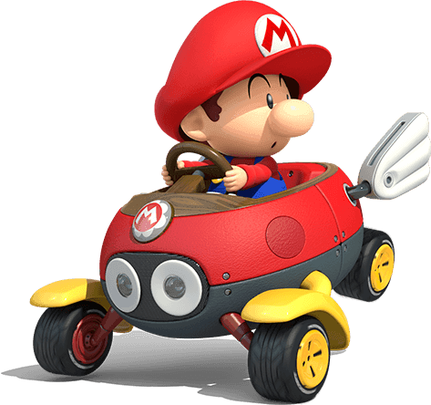

El juego de mesa original sube el listón con elementos de estrategia más profunda,
como dados específicos para cada personaje. También cuenta con nuevas formas de jugar,
incluidos minijuegos manejados con los Joy-Con y nuevos modos para disfrutar con la familia y amigos.
El juego de mesa se mantiene fiel a la estructura de juego básica con cuatro jugadores que se mueven por turnos sobre el tablero en busca de estrellas.
También es posible conectar dos consolas Nintendo Switch y disfrutar de este estilo de juego y del modo Sala de recreo de Toad.
Y por primera vez en la historia de la serie, podrás poner a prueba tus habilidades contra otros fans de Mario Party en un nuevo minijuego online.
Da clic en la imagen para ver el trailer de lanzamiento del juego.
Es un videojuego de carreras desarrollado y publicado por Nintendo para la consola Nintendo Switch. Es la undécima entrega de la serie
Mario Kart, novena en consolas de Nintendo, lanzado mundialmente el 28 de abril de 2017. Cuenta con todo lo visto previamente en
Mario Kart 8 (pistas, personajes, DLCs, vehículos, etc.). Aunque no incluye nuevas pistas de carreras, incluye nuevos personajes y un mejorado modo batalla.
Contiene 48 circuitos, el cuales están inspirados en Animal Crossing, Excitebike, The Legend of Zelda y muchos más.
Además cuenta con diferentes modos de juego, el cuales estan: Grand Prix, Contrarreloj, Carrera VS, Multijugador en línea y Modo Batalla.

Checa aqui el trailer de lanzamiento de este gran juego.
New Super Marios Bros. U Deluxe
Corre, salta y pega pisotones de campeonato a lo largo de más de 160 niveles en 2D de desplazamiento lateral.
¡New Super Mario Bros. U Deluxe para Nintendo Switch recupera el estilo de los juegos clásicos de Super Mario!
Hasta cuatro jugadores* pueden aunar fuerzas para recoger monedas y derrotar a los enemigos de camino al banderín.
También pueden competir de manera amistosa para ver quién reúne más monedas. Sea como sea, ¡la diversión está asegurada!
Observa lo divertido que es este videojuego y las horas de entretenimiento que puedes tener.
Super Mario Maker 2
¡Rompe las reglas y crea los niveles de Super Mario con los que siempre has soñado en Super Mario Maker 2,
disponible en exclusiva para Nintendo Switch! Utiliza el amplio abanico de nuevas herramientas, funciones y elementos de niveles,
dale rienda suelta a tu imaginación y crea niveles únicos que podrás compartir con amigos y jugadores de todo el mundo.
Dale clic en la imagen y observa todo lo que puedes hacer en esta segunda entrega de Mario Maker.